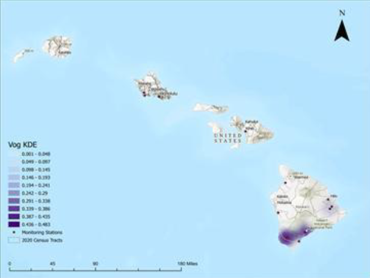
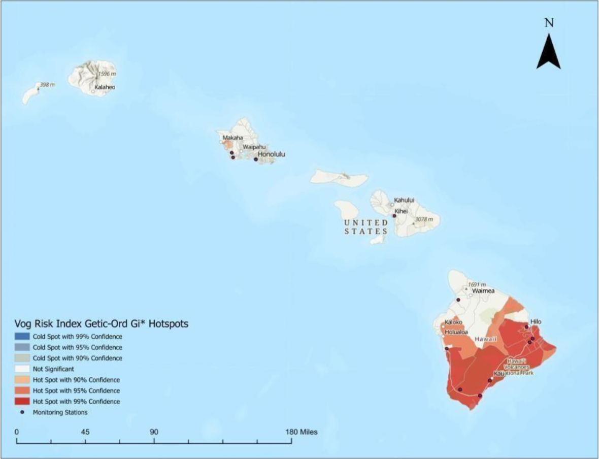
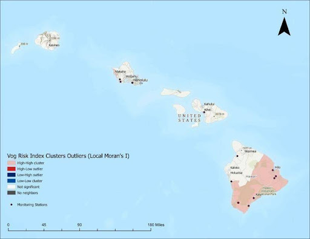
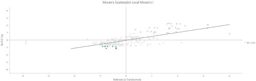

Vog Exposure and Respiratory Vulnerability in Hawaiʻi
Background
This project addresses the public-health concern in Hawaiʻi of the uneven spatial impact of volcanic smog, or vog, produced during eruptive activity at Kīlauea. Vog forms when sulfur dioxide (SO₂) and fine particulate matter (PM₂.₅; particles less than 2.5 microns in diameter) released by volcanic activity accumulate and react in the atmosphere, creating air pollution that can aggravate asthma, chronic obstructive pulmonary disease (COPD), and other respiratory illnesses. Because vog exposure varies by location depending on eruption intensity, wind patterns, and distance from the volcano, some communities may face greater health risk than others.
The objective of this study was to identify where elevated vog exposure and underlying respiratory vulnerability overlap across Hawaiʻi census tracts during an active eruptive period from October 1st to December 1st of 2025, with the broader goal of highlighting communities where public-health preparedness and risk communication may be most needed.
Data and Materials
The analysis combines environmental monitoring data with tract-level health data and census geography. Hourly SO₂ and PM₂.₅ measurements for the period from October 1 to December 1 of 2025 were obtained from the Hawaiʻi Department of Health Clean Air Branch in table form, and these station-based observations were used to derive a pollution exposure metric based on the number of hours above high-pollution thresholds.
Census tracts from 2020 were used as the geographic unit for vulnerability and risk mapping, and tract-level estimates of adult asthma prevalence and adult COPD prevalence from 2017–2022 were compiled from the Hawaiʻi Health Data Warehouse and joined to tract polygons. To support valid spatial analysis, all datasets were projected into NAD 1983 HARN UTM Zone 5N, allowing distance-based tools such as kernel density estimation and nearest-neighbor analysis to operate in consistent map units. This dataset design is appropriate because it links hazard, health vulnerability, and geography into a single analytical framework.
Methods
Several GIS and spatial-statistical methods were used to transform raw observations into interpretable patterns of risk. First, kernel density estimation (KDE) was applied to monitoring station counts of hours above high-pollution thresholds to create a continuous vog exposure surface, using a 90 km search radius based on the monitoring network's mean nearest-neighbor distance. Next, zonal statistics were used to summarize the KDE surface by census tract, producing a tract-level measure of relative vog exposure intensity.
This exposure metric was then standardized with tract-level asthma prevalence and COPD prevalence by converting each variable to z-scores and averaging them into a composite Vog Risk Index. Finally, the project evaluated spatial patterning with Global Moran's I, Local Moran's I (LISA), and Getis-Ord Gi* hot-spot analysis using an 8-nearest-neighbor conceptualization of spatial relationships and false discovery rate correction for the local statistics. This workflow demonstrates analysis and modeling rather than only cartographic display.
Results
The results show that vog-related respiratory risk was not distributed randomly across Hawaiʻi. The KDE surface indicated the greatest relative exposure intensity near Kīlauea and across the southern portion of the Big Island, while lower modeled exposure occurred farther from the main emission source.
The tract-level risk analysis also revealed meaningful clustering. Local Moran's I identified high-high clusters in the southern Big Island, indicating tracts with high risk surrounded by similarly high-risk neighbors, while low-low clusters appeared near Honolulu. The Getis-Ord Gi* results supported this pattern by identifying statistically significant hot spots of elevated respiratory risk in the south and cold spots in lower-risk areas. The strongest visual evidence includes the KDE exposure map, the Gi* hot-spot map, and the Local Moran's I cluster map and scatterplot, because together they directly show where exposure is concentrated, where combined risk is highest, and how strongly those tracts cluster spatially.
Figures

Figure 1: Kernel density estimation (KDE) surface of vog exposure intensity across the Hawaiian Island chain, derived from monitoring station counts of hours above high-pollution thresholds using a 90 km search radius. Highest estimated exposure is concentrated near the Kīlauea eruption site on the southern Big Island.

Figure 2: Getis-Ord Gi* hot-spot analysis of the composite Vog Risk Index by census tract, with statistical confidence levels of 90%, 95%, and 99%. Significant hot spots of elevated respiratory risk are concentrated along the southern Big Island; no significant hot spots are identified in other parts of the state.

Figure 3: Local Moran's I (LISA) cluster map of the Vog Risk Index by census tract across Hawaiʻi. High-high clusters are concentrated in the southern Big Island in proximity to Kīlauea, while low-low clusters appear near Honolulu. High-low and low-high outliers indicate tracts whose risk values diverge from their spatial neighbors.

Figure 4: Moran's scatterplot for the Local Moran's I analysis of the Vog Risk Index, with z-transformed risk values on the x-axis and their spatial lag on the y-axis (R² = 0.31). Points in the upper-right and lower-left quadrants correspond to high-high and low-low clusters respectively; points in the remaining quadrants represent spatial outliers.